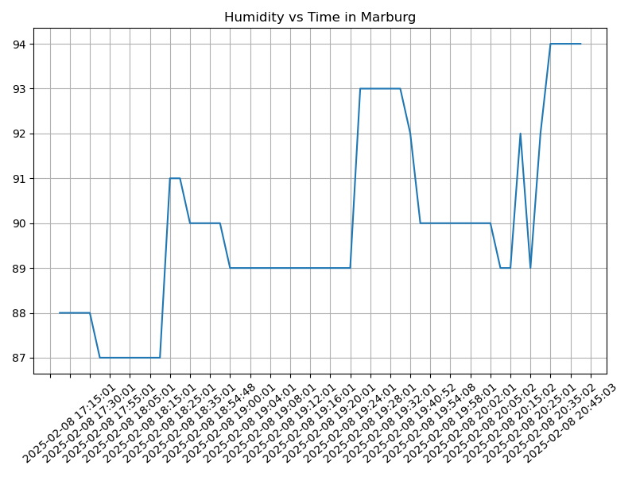

Proyecto ICCD332 Arquitectura de Computadores
1. City Weather APP
]]
Este es el proyecto de fin de semestre en donde se pretende demostrar las destrezas obtenidas durante el transcurso de la asignatura de Arquitectura de Computadores.
- Conocimientos de sistema operativo Linux
- Conocimientos de Emacs/Jupyter
- Configuración de Entorno para Data Science con Mamba/Anaconda
- Literate Programming
1.1. Estructura del proyecto
Se recomienda que el proyecto se cree en el home del sistema operativo i.e. home/<user>. Allí se creará la carpeta CityWeather
cd .. cd .. cd Clima-Marburg-App pwd
/home/juanubuntu/Clima-Marburg-App
El proyecto ha de tener los siguientes archivos y subdirectorios. Adaptar los nombres de los archivos según las ciudades específicas del grupo.
.
└── MarburgWeather
├── MarburgTemperatureAnalysis.ipynb
├── Proyecto
│ ├── Crontab
│ │ ├── get-weather.sh
│ │ ├── get-weather.sh~
│ │ ├── output.log
│ │ └── outputCrontab.log
│ ├── main.py
│ ├── main.py~
│ └── utils
│ ├── __pycache__
│ │ ├── weather_parser.cpython-311.pyc
│ │ └── weather_parser.cpython-312.pyc
│ ├── weather_parser.py
│ └── weather_parser.py~
├── boxplot_time.svg
├── clima-Marburg-hoy.csv
├── clima-marburg-hoy-etl.csv
└── weather-site
├── build-site.el
├── build-site.el~
├── build.sh
├── content
│ ├── images
│ │ ├── humidityindex.png
│ │ ├── marburg.png
│ │ ├── temperature.png
│ │ ├── temperatureindex.png
│ │ └── windindex.png
│ ├── index.org
│ └── index.org~
└── public
├── images
│ ├── humidityindex.png
│ ├── marburg.png
│ ├── temperature.png
│ ├── temperatureindex.png
│ └── windindex.png
└── index.html
11 directories, 30 files
1.2. Formulación del Problema
Se desea realizar un registro climatológico de una ciudad \(\mathcal{C}\). Para esto, escriba un script de Python/Java que permita obtener datos climatológicos desde el API de openweathermap. El API hace uso de los valores de latitud \(x\) y longitud \(y\) de la ciudad \(\mathcal{C}\) para devolver los valores actuales a un tiempo \(t\).
Los resultados obtenidos de la consulta al API se escriben en un archivo clima-<ciudad>-hoy.csv. Cada ejecución del script debe almacenar nuevos datos en el archivo. Utilice crontab y sus conocimientos de Linux y Programación para obtener datos del API de openweathermap con una periodicidad de 15 minutos mediante la ejecución de un archivo ejecutable denominado get-weather.sh. Obtenga al menos 50 datos. Verifique los resultados. Todas las operaciones se realizan en Linux o en el WSL. Las etapas del problema se subdividen en:
- Conformar los grupos de 2 estudiantes y definir la ciudad objeto de estudio.
- Crear su API gratuito en openweathermap
- Escribir un script en Python/Java que realice la consulta al API y escriba los resultados en clima-<ciudad>-hoy.csv. El archivo ha de contener toda la información que se obtiene del API en columnas. Se debe observar que los datos sobre lluvia (rain) y nieve (snow) se dan a veces si existe el fenómeno.
Desarrollar un ejecutable get-weather.sh para ejecutar el programa Python/Java.1
- Configurar Crontab para la adquisición de datos. Escriba el comando configurado. Respalde la ejecución de crontab en un archivo output.log
Realizar la presentación del Trabajo utilizando la generación del sitio web por medio de Emacs. Para esto es necesario crear la carpeta weather-site dentro del proyecto. Puede ajustar el look and feel según sus preferencias. El servidor a usar es el simple-httpd integrado en Emacs que debe ser instalado:
- Usando comandos Emacs:
M-x package-installpresionamos enter (i.e. RET) y escribimos el nombre del paquete: simple-httpd - Configurando el archivo init.el
(use-package simple-httpd :ensure t)
Instrucciones de sobre la creación del sitio web se tiene en el vídeo de instrucciones y en el archivo Org-Website.org en el GitHub del curso
- Usando comandos Emacs:
- Su código debe estar respaldado en GitHub/BitBucket, la dirección será remitida en la contestación de la tarea
1.3. Descripción del código
En esta sección se debe detallar segmentos importantes del código desarrollado así como la estrategia de solución adoptada por el grupo para resolver el problema. Divida su código en unidades funcionales para facilitar su presentación y exposición.
Lectura del API
import requests import json import pandas as pd from datetime import datetime # -------------------------- # 1. Función para leer de la API # -------------------------- def fetch_weather_data(api_key: str, city: str = "Marburg") -> dict: """ Obtiene datos meteorológicos en tiempo real de OpenWeatherMap API. Args: api_key (str): Clave API de OpenWeatherMap city (str): Nombre de la ciudad a consultar Returns: dict: Respuesta JSON de la API en crudo Ejemplo: response = fetch_weather_data("tu_api_key", "Madrid") """ url = f"https://api.openweathermap.org/data/2.5/weather?q={city}&appid={api_key}&units=metric" try: response = requests.get(url, timeout=10) response.raise_for_status() # Lanza error para códigos 4XX/5XX return response.json() except requests.exceptions.RequestException as e: print(f"Error en la solicitud: {str(e)}") return None API_KEY = "f2763a4d45df3d3861d4db5340a80fe1" response = fetch_weather_data(API_KEY, "Marburg") print(response)
Puede tener que borrar los dos puntos para que el resultado aparezca en el HTML. En mi caso no fue necesario. Pruebe.
8
Convertir Json a Diccionario de Python
# -------------------------- # 2. Función para transformar JSON a diccionario estructurado # -------------------------- def transform_api_response(api_response: dict) -> dict: """ Transforma la respuesta cruda de la API en un diccionario estructurado. Args: api_response (dict): JSON crudo de la API Returns: dict: Datos estructurados con 32 campos Ejemplo: datos = transform_api_response(response) """ if not api_response: return None try: # Añadir timestamp local timestamp = datetime.now().strftime("%Y-%m-%d %H:%M:%S") return { # Metadatos "timestamp": timestamp, "cod": api_response.get("cod"), # Coordenadas "coord_lon": api_response.get("coord", {}).get("lon"), "coord_lat": api_response.get("coord", {}).get("lat"), # Tiempo "main_temp": api_response.get("main", {}).get("temp"), "main_feels_like": api_response.get("main", {}).get("feels_like"), "main_temp_min": api_response.get("main", {}).get("temp_min"), "main_temp_max": api_response.get("main", {}).get("temp_max"), "main_pressure": api_response.get("main", {}).get("pressure"), "main_humidity": api_response.get("main", {}).get("humidity"), "main_sea_level": api_response.get("main", {}).get("sea_level"), "main_grnd_level": api_response.get("main", {}).get("grnd_level"), # Viento "wind_speed": api_response.get("wind", {}).get("speed"), "wind_deg": api_response.get("wind", {}).get("deg"), "wind_gust": api_response.get("wind", {}).get("gust"), # Clima "weather_0_id": api_response.get("weather", [{}])[0].get("id"), "weather_0_main": api_response.get("weather", [{}])[0].get("main"), "weather_0_description": api_response.get("weather", [{}])[0].get("description"), "weather_0_icon": api_response.get("weather", [{}])[0].get("icon"), # Nubes "clouds_all": api_response.get("clouds", {}).get("all"), # Sistema "sys_country": api_response.get("sys", {}).get("country"), "sys_sunrise": api_response.get("sys", {}).get("sunrise"), "sys_sunset": api_response.get("sys", {}).get("sunset"), "sys_type": api_response.get("sys", {}).get("type"), "sys_id": api_response.get("sys", {}).get("id"), # Ubicación "timezone": api_response.get("timezone"), "id": api_response.get("id"), "name": api_response.get("name"), # Precipitación (campos opcionales) "Lluvia_1h": api_response.get("rain", {}).get("1h", 0), "Nieve_1h": api_response.get("snow", {}).get("1h", 0), # Visibilidad "visibility": api_response.get("visibility") } except Exception as e: print(f"Error transformando datos: {str(e)}") return None datos = transform_api_response(response) print(datos)
Guardar el archivo csv
# -------------------------- # 3. Función para guardar en CSV # -------------------------- def save_dict_to_csv(data: dict, output_path: str) -> None: """ Guarda un diccionario de datos en archivo CSV, preservando 32 columnas. Args: data (dict/list): Diccionario individual o lista de diccionarios output_path (str): Ruta del archivo CSV de salida Ejemplo: save_dict_to_csv([datos1, datos2], "datos.csv") """ if not data: print("No hay datos para guardar") return try: # Convertir a DataFrame df = pd.DataFrame(data if isinstance(data, list) else [data]) # Ordenar columnas según estructura original columns = [ 'timestamp', 'coord_lon', 'coord_lat', 'weather_0_id', 'weather_0_main', 'weather_0_description', 'weather_0_icon', 'main_temp', 'main_feels_like', 'main_temp_min', 'main_temp_max', 'main_pressure', 'main_humidity', 'main_sea_level', 'main_grnd_level', 'visibility', 'wind_speed', 'wind_deg', 'wind_gust', 'clouds_all', 'sys_type', 'sys_id', 'sys_country', 'sys_sunrise', 'sys_sunset', 'timezone', 'id', 'name', 'cod', 'Lluvia_1h', 'Nieve_1h' ] df[columns].to_csv(output_path, index=False, sep=";", encoding='utf-8-sig') print(f"Datos guardados exitosamente en: {output_path}") except Exception as e: print(f"Error guardando CSV: {str(e)}") save_dict_to_csv(datos, "clima-Marburg-hoy.csv")
1.4. Script ejecutable sh
Se coloca el contenido del script ejecutable. Recuerde que se debe utilizar el entorno de anaconda/mamba denominado iccd332 para la ejecución de Python; independientemente de que tenga una instalación nativa de Python
En el caso de los shell script se puede usar `which sh` para conocer la ubicación del ejecutable
which sh
/usr/bin/sh
De igual manera se requiere localizar el entorno de mamba iccd332 que será utilizado
which mamba
/home/juanubuntu/miniforge3/condabin/mamba
Codigo dentro de get-weather.sh
#!/usr/bin/sh # ========================================================== # @file get-weather.sh # @brief Obtiene datos del clima y los guarda en un archivo log. # @author Juan M, # @date 2025-02-08 # @version 1.0 # ========================================================== TIMESTAMP=$(date "+%Y-%m-%d %H:%M:%S") SCRIPT_DIR="$(dirname "$(realpath "$0")")" API_KEY="a2bf02c552258a864af174c79d421d35" # Reemplazar con API key real CITY="Marburg" URL="https://api.openweathermap.org/data/2.5/weather?q=$CITY&appid=$API_KEY&units=metric" LOG_FILE="$SCRIPT_DIR/output.log" # Obtener datos y formatear correctamente el JSON response=$(curl -s "$URL") # Usar jq para combinar el timestamp con la respuesta if ! command -v jq &> /dev/null; then echo "Error: jq no está instalado. Instálalo con 'sudo apt install jq'" exit 1 fi echo "$response" | jq --arg ts "$TIMESTAMP" '. + {timestamp: $ts}' -c >> "$LOG_FILE"
Ubicacion del archivo get-weather.sh
cd .. cd .. cd Clima-Marburg-App/MarburgWeather/Proyecto/Crontab ls
Hacer ejecutable el script
cd .. cd .. cd Clima-Marburg-App/MarburgWeather/Proyecto/Crontab chmod +x get-weather.sh
1.5. Configuración de Crontab
Se indica la configuración realizada en crontab para la adquisición de datos
crontab -l
- Redirigimos los errores a outputCrontab para evitar que se envie por correo.
2. Presentación de resultados
Para la pressentación de resultados se utilizan las librerías de Python:
- matplotlib
- pandas
Alternativamente como pudo estudiar en el Jupyter Notebook
CityTemperatureAnalysis.ipynb, existen librerías alternativas que se
pueden utilizar para presentar los resultados gráficos. En ambos
casos, para que funcione los siguientes bloques de código, es
necesario que realice la instalación de los paquetes usando mamba
install <nombre-paquete>
2.1. Muestra Aleatoria de datos
Presentar una muestra de 10 valores aleatorios de los datos obtenidos.
import os import pandas as pd # lectura del archivo csv obtenido df = pd.read_csv('/home/iccd332-josune/Clima-Marburg-App/MarburgWeather/clima-marburg-hoy-etl.csv') # se imprime la estructura del dataframe en forma de filas x columnas print(df.shape)
Resultado del número de filas y columnas leídos del archivo csv
(55, 32)
table1 = df.sample(10) table = [list(table1)]+[None]+table1.values.tolist()
| timestamp | coordlon | coordlat | weather0id | weather0main | weather0description | weather0icon | base | maintemp | mainfeelslike | maintempmin | maintempmax | mainpressure | mainhumidity | mainsealevel | maingrndlevel | visibility | windspeed | winddeg | windgust | cloudsall | systype | sysid | syscountry | syssunrise | syssunset | timezone | id | name | cod | Lluvia1h | Nieve1h |
|---|---|---|---|---|---|---|---|---|---|---|---|---|---|---|---|---|---|---|---|---|---|---|---|---|---|---|---|---|---|---|---|
| 2025-02-08 19:12:01 | 8.7667 | 50.8167 | 803 | Clouds | broken clouds | 04n | stations | -0.32 | -2.21 | -0.7 | 1.12 | 1027 | 89 | 1027 | 992 | 10000 | 1.56 | 27 | 1.32 | 55 | 2 | 2097769 | DE | nan | nan | 3600 | 2873759 | Marburg | 200 | 0 | 0 |
| 2025-02-08 19:06:01 | 8.7667 | 50.8167 | 803 | Clouds | broken clouds | 04n | stations | -0.32 | -2.21 | -0.7 | 1.12 | 1027 | 89 | 1027 | 992 | 10000 | 1.56 | 27 | 1.32 | 55 | 2 | 2097769 | DE | nan | nan | 3600 | 2873759 | Marburg | 200 | 0 | 0 |
| 2025-02-08 20:10:01 | 8.7667 | 50.8167 | 800 | Clear | clear sky | 01n | stations | -0.94 | -3.15 | -1.96 | 0.57 | 1027 | 89 | 1027 | 992 | 10000 | 1.71 | 22 | 1.64 | 3 | 2 | 2097769 | DE | nan | nan | 3600 | 2873759 | Marburg | 200 | 0 | 0 |
| 2025-02-08 19:26:01 | 8.7667 | 50.8167 | 803 | Clouds | broken clouds | 04n | stations | -0.76 | -2.72 | -1.26 | 1.12 | 1027 | 93 | 1027 | 992 | 10000 | 1.56 | 27 | 1.32 | 55 | 2 | 2097769 | DE | nan | nan | 3600 | 2873759 | Marburg | 200 | 0 | 0 |
| 2025-02-08 20:04:01 | 8.7667 | 50.8167 | 800 | Clear | clear sky | 01n | stations | -0.94 | -3.15 | -1.96 | 0.57 | 1027 | 90 | 1027 | 992 | 10000 | 1.71 | 22 | 1.64 | 3 | 2 | 2097769 | DE | nan | nan | 3600 | 2873759 | Marburg | 200 | 0 | 0 |
| 2025-02-08 19:40:52 | 8.7667 | 50.8167 | 800 | Clear | clear sky | 01n | stations | -0.88 | -3.08 | -1.4 | 0.57 | 1027 | 92 | 1027 | 992 | 10000 | 1.71 | 22 | 1.64 | 3 | 2 | 2097769 | DE | nan | nan | 3600 | 2873759 | Marburg | 200 | 0 | 0 |
| 2025-02-08 17:50:01 | 8.7667 | 50.8167 | 803 | Clouds | broken clouds | 04n | stations | 0.23 | -1.89 | -0.29 | 1.68 | 1027 | 87 | 1027 | 992 | 10000 | 1.77 | 20 | 1.71 | 59 | 2 | 2097769 | DE | nan | nan | 3600 | 2873759 | Marburg | 200 | 0 | 0 |
| 2025-02-08 19:10:01 | 8.7667 | 50.8167 | 803 | Clouds | broken clouds | 04n | stations | -0.32 | -2.21 | -0.7 | 1.12 | 1027 | 89 | 1027 | 992 | 10000 | 1.56 | 27 | 1.32 | 55 | 2 | 2097769 | DE | nan | nan | 3600 | 2873759 | Marburg | 200 | 0 | 0 |
| 2025-02-08 18:00:01 | 8.7667 | 50.8167 | 803 | Clouds | broken clouds | 04n | stations | 0.11 | -2.03 | -0.85 | 1.68 | 1027 | 87 | 1027 | 992 | 10000 | 1.77 | 20 | 1.71 | 59 | 2 | 2097769 | DE | nan | nan | 3600 | 2873759 | Marburg | 200 | 0 | 0 |
| 2025-02-08 19:22:01 | 8.7667 | 50.8167 | 803 | Clouds | broken clouds | 04n | stations | -0.32 | -2.21 | -0.7 | 1.12 | 1027 | 89 | 1027 | 992 | 10000 | 1.56 | 27 | 1.32 | 55 | 2 | 2097769 | DE | nan | nan | 3600 | 2873759 | Marburg | 200 | 0 | 0 |
2.2. Gráfica Temperatura vs Tiempo
Realizar una gráfica de la Temperatura en el tiempo.
El siguiente cógido permite hacer la gráfica de la temperatura vs
tiempo para Org 9.7+. Para saber que versión dispone puede ejecutar
M-x org-version
import matplotlib.pyplot as plt import matplotlib.dates as mdates # Define el tamaño de la figura de salida fig = plt.figure(figsize=(8,6)) plt.plot(df['timestamp'], df['main_temp']) # dibuja las variables dt y temperatura # ajuste para presentacion de fechas en la imagen plt.gca().xaxis.set_major_locator(mdates.DayLocator(interval=2)) # plt.gca().xaxis.set_major_formatter(mdates.DateFormatter('%Y-%m-%d')) plt.grid() # Titulo que obtiene el nombre de la ciudad del DataFrame plt.title(f'Main Temp vs Time in {next(iter(set(df.name)))}') plt.xticks(rotation=40) # rotación de las etiquetas 40° fig.tight_layout() fname = '/home/iccd332-josune/Clima-Marburg-App/MarburgWeather/weather-site/content/images/temperatureindex.png' plt.savefig(fname) fname
Figura 1: Gráfica Temperatura vs Tiempo
Debido a que el archivo index.org se abre dentro de la carpeta
content, y en cambio el servidor http de emacs se ejecuta desde la
carpeta public es necesario copiar el archivo a la ubicación
equivalente en /public/images
cp -rfv /home/iccd332-josune/Clima-Marburg-App/MarburgWeather/weather-site/content/images/* /home/iccd332-josune/Clima-Marburg-App/MarburgWeather/weather-site/public/images
2.3. Realice una gráfica de Humedad con respecto al tiempo
import matplotlib.pyplot as plt import matplotlib.dates as mdates import pandas as pd # Limpia los nombres de las columnas por si tienen espacios extra df.columns = df.columns.str.strip() # Define el tamaño de la figura de salida fig = plt.figure(figsize=(8,6)) # Dibujar temperatura vs tiempo plt.plot(df['timestamp'], df['main_humidity']) # Ajuste para presentación de fechas en la imagen plt.gca().xaxis.set_major_locator(mdates.DayLocator(interval=2)) plt.grid() # Título del gráfico plt.title(f'Humidity vs Time in {next(iter(set(df.name)))}') plt.xticks(rotation=40) # Rotación de las etiquetas 40° fig.tight_layout() # Guardar la imagen fname = "/home/iccd332-josune/Clima-Marburg-App/MarburgWeather/weather-site/content/images/humidityindex.png" plt.savefig(fname) # Devolver el nombre del archivo para que Org Mode lo muestre fname

2.4. Opcional Presente alguna gráfica de interés.
import matplotlib.pyplot as plt import matplotlib.dates as mdates import pandas as pd # Limpia los nombres de las columnas por si tienen espacios extra df.columns = df.columns.str.strip() # Define el tamaño de la figura de salida fig = plt.figure(figsize=(8,6)) # Dibujar temperatura vs tiempo plt.plot(df['timestamp'], df['wind_speed']) # Ajuste para presentación de fechas en la imagen plt.gca().xaxis.set_major_locator(mdates.DayLocator(interval=2)) plt.grid() # Título del gráfico plt.title(f'Wind_speed vs Time in {next(iter(set(df.name)))}') plt.xticks(rotation=40) # Rotación de las etiquetas 40° fig.tight_layout() # Guardar la imagen fname = "/home/iccd332-josune/Clima-Marburg-App/MarburgWeather/weather-site/content/images/windindex.png" plt.savefig(fname) # Devolver el nombre del archivo para que Org Mode lo muestre fname
3. Referencias
Notas al pie de página:
Recuerde que su máquina ha de disponer de un entorno de anaconda/mamba denominado iccd332 en el cual se dispone del interprete de Python